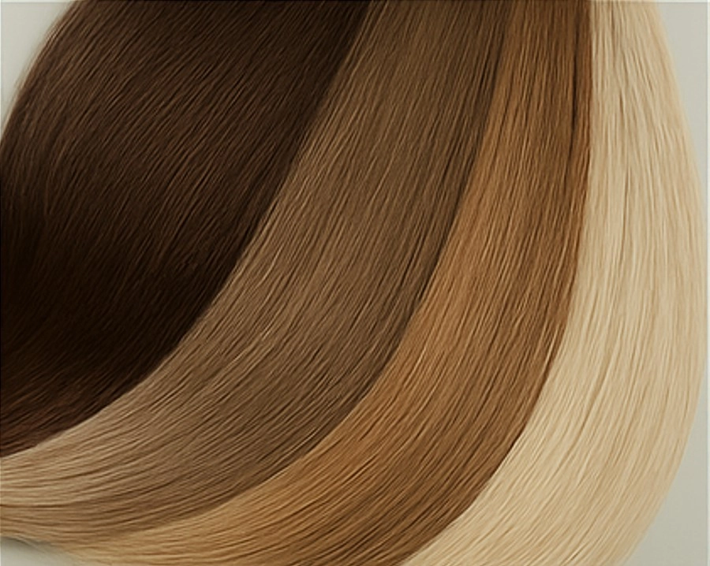

Наращивание волос в Ростове-на-Дону: капсульный метод, уход, коррекция — полный гид


Уход за нарощенными волосами: советы мастера
Как ухаживать за нарощенными волосами? Советы мастера наращивания волос в Ростове-на-Дону: правильное мытьё, расчёсывание, укладка и коррекция.

Капсульное наращивание волос: преимущества и недостатки
Узнайте все плюсы и минусы метода и как сохранить результат до 4 месяцев. Внутри специальное предложение для новых клиентов в Ростове-на-Дону!

6 главных ошибок после наращивания волос: что портит результат и как избежать
Секрет идеальных волос после наращивания: 6 фатальных ошибок, которые совершают 9 из 10 девушек!